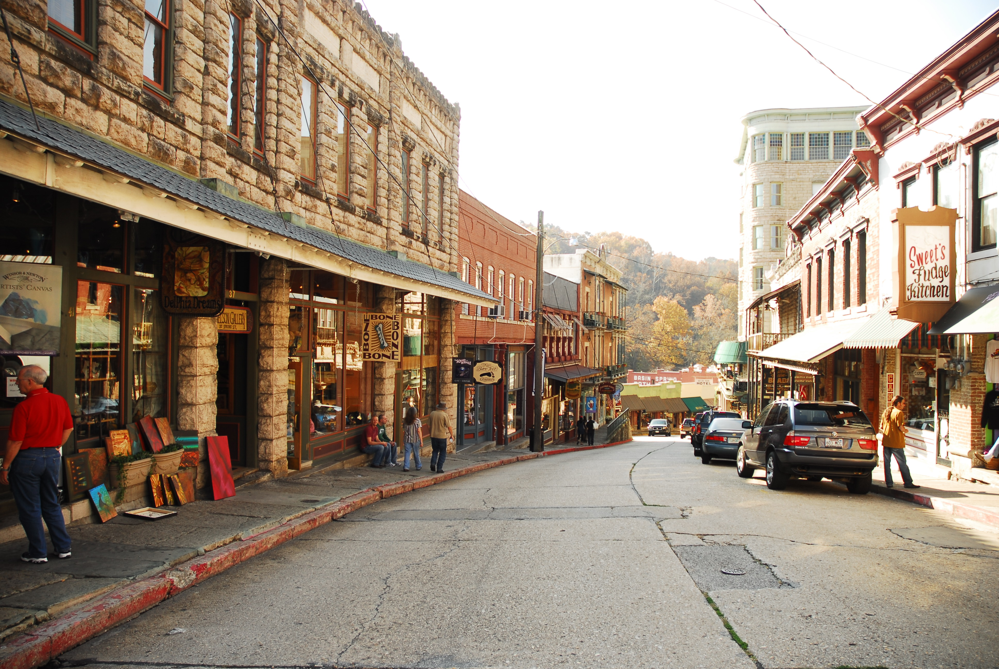

Eureka Springs

Eureka Springs is a unique and charming city nestled in the Ozark Mountains of Northwest Arkansas. Known for its preserved Victorian architecture, winding streets, natural springs, and vibrant arts scene, it offers a distinctive and eclectic experience.
Economic Overview
The median household income in Eureka Springs is approximately $40,313 (2023). This is lower than the median household income for the entire state of Arkansas ($58,773), which is common for smaller, tourism-dependent communities with a significant presence of service industry jobs.
Things to Do in Eureka Springs
- Explore the historic downtown area and its unique shops, galleries, and restaurants.
- Visit the numerous natural springs, many with public access.
- Experience the Great Passion Play.
- Discover local art and craft shops throughout the city.
- Take a ride on the Eureka Springs & North Arkansas Railway.
- Tour the historic Crescent Hotel.
History of Eureka Springs
Eureka Springs was founded in 1879 following widespread reports of the healing powers of its natural springs. It quickly became a popular Victorian resort town, attracting visitors from across the country seeking health and relaxation. The town's unique architecture and winding streets are a testament to its rapid growth in the late 19th century. The Encyclopedia of Arkansas provides a comprehensive history of the city. [1]
| Historical Event | Date | Description |
|---|---|---|
| Discovery of Springs' Healing Powers | Circa 1870s | Reports of healing properties of the springs spread, drawing early settlers. |
| Town Founded | 1879 | Eureka Springs was officially founded and began to rapidly develop as a resort. [1] |
| Peak as a Resort Town | Late 19th - Early 20th Century | The city flourished as a major health and tourist destination, leading to its distinctive architecture. |
References
- [1] Eureka Springs (Carroll County) (Encyclopedia of Arkansas)
- [2] QuickFacts: Eureka Springs city, Arkansas (U.S. Census Bureau, 2021)
- [3] Population Estimates (U.S. Census Bureau, 2023)
- Eureka Springs, AR - Niche
- Eureka Springs, AR - Profile data - Census Reporter